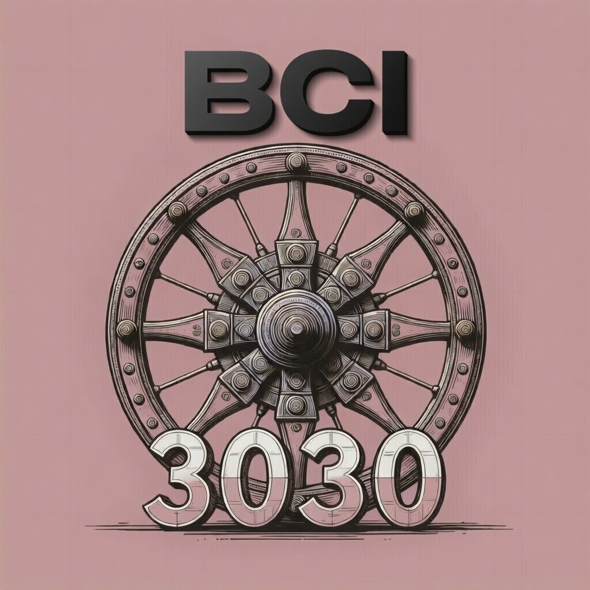
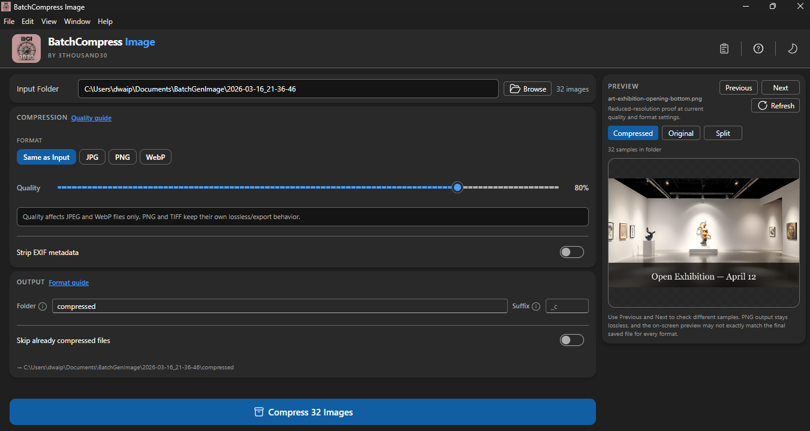
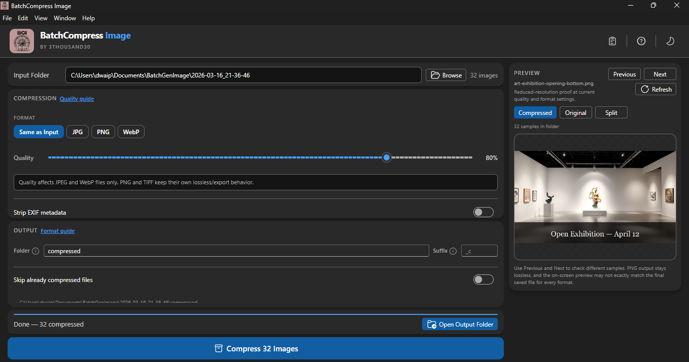
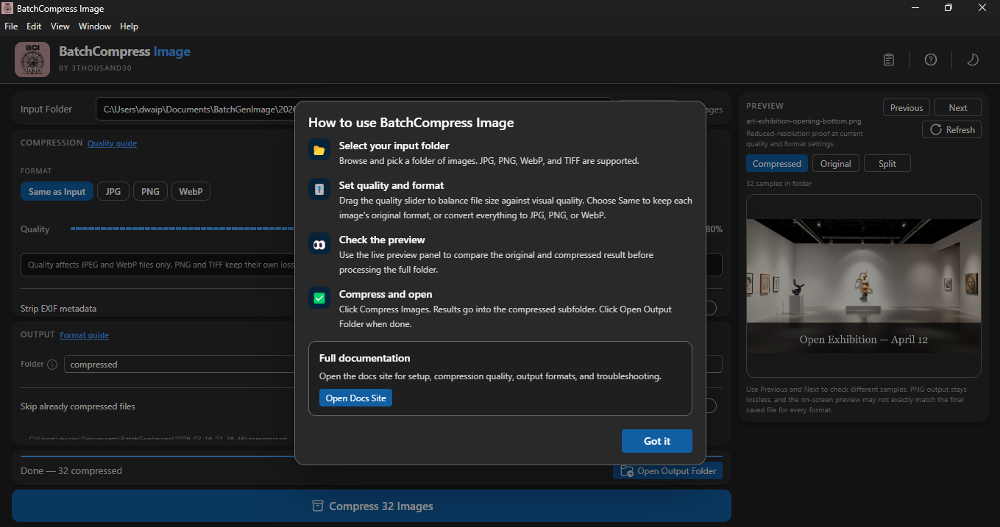

utility · windows
BatchCompress Image
Compress image batches. Preview before export. No cloud, no account, all local.
Choose an input folder, set your quality and output format, check a live preview, and compress the full batch in one run. Whether you are preparing images for websites, email, marketplaces, portfolios, or faster sharing, BCI helps you cut file size while staying in control. Everything runs locally on your machine. No forced account. No subscription. No cloud upload. Your images stay on your PC.
>
screenshots



>
what_it_does
// batch compression workflow — choose a folder, set quality and format, compress the full batch
// live preview — compare original and compressed output before committing
// quality control — tune compression to balance file size against visual quality
// flexible export — keep original format or convert to JPG, PNG, or WebP
// metadata control — strip EXIF data for leaner output files
// input formats: JPG, PNG, WebP, and TIFF
// skip existing — re-run safely without reprocessing completed files
// real-time progress with file-level error logging
// safe cancel — stop mid-run without losing completed outputs
// 100% local — no internet, no account, no telemetry
>